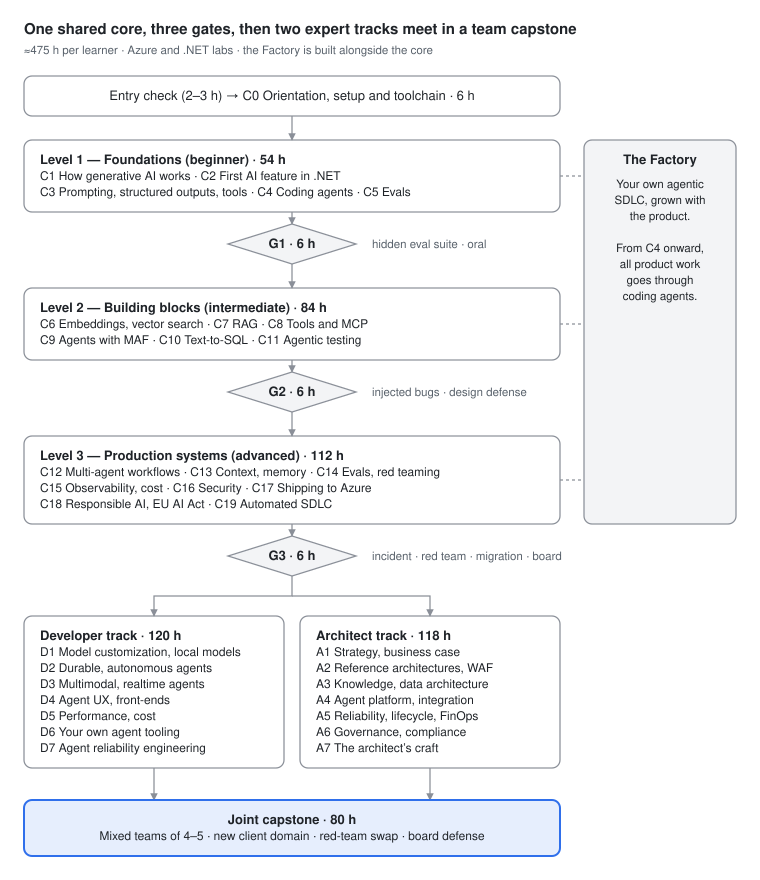

Course overview¶
AI Solution Developer & AI Solution Architect — from developer to expert
Course release: 2026.11 (content as of October 2026) · Total effort: ≈ 475 h per learner (core 274 h + one expert track ≈ 120 h + joint capstone 80 h) · Stack: Azure + .NET 10 first, with bounded Python and Node.js · Format: learning by doing on one evolving product, gated by hidden eval suites, code review and design defense
The promise, stated plainly¶
You are a working software developer who is new to AI. Over about 475 hours of deliberate practice you will build, test, secure, ship, operate and govern one realistic LLM and agentic product, Fleet Ops Copilot for the fictional logistics company Trakia Freight. You will build it through your own agentic delivery pipeline (the Factory), where coding agents do most of the typing and you specify, constrain and verify their work. You then go deeper in one of two expert tracks, Developer or Architect, and defend a team capstone for a new client in a different domain in front of a review board. "Expert" here means demonstrated, assessed competence on expert-level tasks. You will diagnose failures from traces, design verification before implementation, choose the lowest-complexity architecture that passes the evals, and defend each decision with evidence about cost, risk and quality. It does not mean seniority. Seniority still comes from years of running production systems. What the course gives you is the habits, the portfolio and the judgement that make those years count, plus an honest record of what you can and cannot do yet.
What the course is not: a tour of Azure products (they will be renamed again), a prompt-tricks course, an ML-research course (you will not train foundation models), or a certification cram. Certification alignment is mapped below, but passing a vendor exam is a side effect and not the goal.
1. Who it is for¶
Entry profile: a working developer in any language who is comfortable with Git (branches, PRs, rebase), HTTP/REST and JSON, SQL (joins, aggregation, indexes), a unit-test framework, and containers at the "run a compose file" level. No prior AI or ML knowledge is assumed. If you don't know C#, C0 teaches enough to start, and the language grows with the labs.
Not a fit (yet): people who have never shipped code to a shared repository, people who want a no-code path (Copilot Studio is covered as an architecture option, not as a learning medium), and ML researchers who want model training (see the AWS AIP-C01 boundary below: this is an AI-engineering course, not ML engineering).
Entry check (≈ 2–3 h, self-administered, honour-based)¶
Complete all four without an AI assistant. The point is to calibrate your fundamentals, because the course later depends on your ability to judge code you did not type.
- Build: in any language, implement
GET /vehicles/{id}/trips?from=&to=over the provided SQLite fileentry/trakia-mini.db. Return 404 for unknown vehicles and 400 for an invalid date range, and paginate. Write at least 5 unit or integration tests. Open a PR against your own fork. - Query: write one SQL query that returns, for each depot, the 3 vehicles with the highest harsh-braking events per 100 km in the last 30 days, ties broken by vehicle id.
- Read: given a 150-line C# file and a 100-line Python file (
entry/read/), answer 6 questions about behaviour, including one that hides an off-by-one error and one that hides an async/await mistake. - Operate: run the provided
docker compose up, find why the API container restarts (the cause is in the logs), and fix it.
Pass indicator: all four done in under 3 hours, tests green. If you need more than about 5 hours, close the gap first (Git, SQL and testing fundamentals). The course will not teach them and the gates assume them.
Hardware and accounts: 16 GB RAM minimum and 32 GB recommended (Foundry Local models plus Docker plus SQL Server; exact model memory needs vary, so verify against current documentation (the Foundry Local model list)). Docker or Codespaces, a GitHub account, an Azure subscription where you can create resource groups (Section 8), and access to at least one coding agent (GitHub Copilot with agent mode and/or Claude Code).
2. Exit competencies¶
A graduate can do the following, and every item is assessed by a gate, a lab acceptance check or the capstone (see Competency matrix for the full framework):
- Explain and predict model behaviour in engineering terms. Covers tokens and their cost (including token-heavier Bulgarian text), sampling nondeterminism (temperature 0 is not deterministic in production serving), reasoning effort, context budgets and when not to use an LLM.
- Build provider-agnostic AI features in .NET on
Microsoft.Extensions.AI, where swapping a model (cloud ↔ Foundry Local ↔ any OpenAI-compatible endpoint) is a configuration change followed by a green eval run. - Design retrieval that is hybrid, reranked, permission-trimmed and multilingual, and measure retrieval and generation separately.
- Design tools and MCP servers for agents (consolidated, paginated, actionable errors). Ship a stateless MCP server on the 2026-07-28 spec.
- Choose the lowest-complexity architecture that passes the evals: prompt → workflow → single agent → multi-agent. Implement it with Microsoft Agent Framework with budgets, checkpoints and human approval.
- Run failure-driven evaluation: error analysis on real traces, a failure taxonomy, binary evaluators per failure mode, LLM judges calibrated against human labels (TPR/TNR), trajectory evals and CI gates.
- Operate AI systems: end-to-end OpenTelemetry traces, cost per task, model migration with a go/no-go based on per-failure-mode evals, and incident diagnosis from traces.
- Secure agentic systems architecturally: lethal-trifecta analysis, least agency, agent identity, guardrails as a second layer, MCP supply-chain controls, and red teaming with measured attack success rate.
- Govern: classify a system under the EU AI Act as amended by Regulation (EU) 2026/1744, produce the risk file, design human oversight and map practice to NIST AI RMF and ISO/IEC 42001.
- Deliver through agents: run a governed agentic SDLC (repo memory, skills, hooks, test-first specs, mutation and eval gates, cloud agents from issues to PRs, AI review, SRE agent) and be able to explain and defend every merged line.
- Developer track: engineer for performance, cost, durability and reliability (pass^k, simulators, fault injection), customize models when evals justify it, and build your own agent tooling.
- Architect track: move from business problem to portfolio, business case (ROI and TCO, build/buy/extend), reference architecture and landing zone, multi-tenant gateway, model-lifecycle and DR plan, FinOps, a governance system and a programme operating model, and defend all of it in front of a review board.
3. Two roles, one technical core¶
The 2026 job market and the 2026 certification overhaul describe two related roles. Analyses of US postings (one recruiter-analytics source, so treat as directional) show the AI engineer as an applied builder: Python 62%, cloud 55%, foundation models 51%, with RAG and observability in the core stack. The AI architect appears as "a design role with a build component, not the reverse": cloud platforms 60.9%, Python 43.9%, observability 38.9%, foundation models 37.8%, RAG 28.1%, CI/CD 26.2%, Azure named in 42.5% of postings, and typically about 7 years of experience. Microsoft's certifications split the same way: AI-103 (AI Apps and Agents Developer) and AB-100 (Agentic AI Business Solutions Architect; "Expert" suffix in the title: verify against current documentation).
| AI Solution Developer | AI Solution Architect | |
|---|---|---|
| Primary output | Working, evaluated, observable, secure AI features and agents in production | Decisions and the structures that make many teams' AI features safe, affordable and sustainable |
| Owns | Implementation, eval suites and judges, tool and MCP design, performance and cost per task, reliability engineering, the team's Factory | Use-case portfolio and business case, reference architecture and landing zone, gateway and tenancy model, model-lifecycle and DR strategy, governance system, ADRs, review process |
| Typical artefacts | Code, evals, traces, red-team fixes, runbooks, postmortems | ADRs, C4 models, threat models, cost models, DR plans, AI Act risk files, WAF AI assessments, stakeholder memos |
| Decides | How (within constraints): retrieval strategy, agent loop design, prompt and context layout, which failure deserves an evaluator | Whether and what (setting constraints): build/buy/extend, which models and regions, risk appetite, tenancy, SLOs, budgets, oversight design |
| Success measured by | Hidden-eval scores, pass^k, mutation score, cost per task, escaped defects | Review-board outcomes, cost-model accuracy vs actuals, DR drill results, audit readiness, adoption and ROI evidence |
| Target level at exit (SFIA-style, course-designer inference) | Level 4–5 ("enable", "ensure and advise") | Level 5–6 ("ensure and advise", "initiate and influence") |
Overlap is deliberate. Both roles take the same 274-hour core, and architects build everything developers build in the core. An architect who cannot read a trace, run an eval or spot a lethal trifecta in a design produces slideware. A developer who cannot write an ADR, estimate cost per task or explain the AI Act classification of a feature cannot be trusted with autonomy. The tracks differ in depth of engineering (D) versus breadth of judgement (A), and they meet again in the capstone, where mixed teams must make both work together.
4. Course structure¶

The core is sequential because each module adds a product increment that the next one builds on. Inside the Developer track the order is recommended, not enforced (D5 recommends D1; D7 recommends D2 and D5). The Architect track is effectively sequential, because each module's prerequisites name its predecessors (A3 needs A2; A4 needs A2–A3; A5 needs A1, A2 and A4; A6 needs A1–A5; A7 needs A1–A6). Learners may take both tracks (+≈ 120 h). The capstone requires G3 and at least 4 of the 7 modules of one track, with the remaining track modules allowed to run in parallel (see pacing).
5. The running product and the Factory¶
Trakia Freight and Fleet Ops Copilot¶
Trakia Freight is a fictional mid-size logistics company headquartered in Plovdiv, Bulgaria. It has about 400 trucks, about 600 drivers, three depots (Plovdiv, Sofia, Varna) and cross-border EU routes. All data is synthetic and GDPR-safe, and it is generated by seeded tools in the lab repo (trakia-fleetops, /data):
- SQL Server 2025 database
TrakiaOps: vehicles, pseudonymized drivers, trips, about 5M telematics events (GPS, harsh braking, fuel, engine fault codes), maintenance work orders, parts, customers, shipments and incidents. - A Bulgarian and English document corpus of about 1,500 documents: fleet policy handbook, driver code of conduct, HR policies, maintenance manuals (PDFs with tables), EU driving-time and tachograph summaries, customer SLAs, incident reports and scanned delivery notes.
- Mock APIs (OpenAPI): ticketing, scheduling, parts supplier, and notification (email/Teams).
- A role model with document ACLs: dispatcher, fleet manager, mechanic, driver, HR, customer service and auditor.
Why this domain: it has structured and unstructured data, real permissions, safety-relevant actions (booking maintenance, notifying customers), Bulgarian-language users, and a genuine EU AI Act trap. Driver-monitoring features touch the Annex III employment use cases, which learners must recognise and design around in C18. The domain is complex enough that "just add an agent" fails visibly.
Product increments: a streaming "Ask Fleet Ops" chat (C2) → typed incident extraction and first tool (C3) → agent-ready repo (C4) → golden set and CI evals (C5) → semantic search (C6) → cited, permission-aware BG/EN RAG (C7) → Trakia MCP server (C8) → Fleet Assistant agent with human approval (C9) → Fleet Analyst text-to-SQL agent (C10) → full agent-maintained test pyramid (C11) → multi-agent incident workflow (C12) → long-horizon memory and GraphRAG (C13) → production eval suite and red-team report (C14) → full tracing and cost per task (C15) → threat model and hardening (C16) → deployed behind an AI gateway, with A2A and Teams exposure (C17) → AI Act risk file (C18) → fully automated SDLC watched by an SRE agent (C19). The D-track adds a realtime voice assistant for drivers, a fine-tuned fault-code classifier on Foundry Local at the depots, a durable fleet-planner agent and custom agent tooling. The A-track turns the product into a multi-tenant offering that Trakia sells to other fleets, with a landing zone, knowledge platform, agent registry, DR/FinOps and an ISO/IEC 42001-style governance system.
The Factory¶
In parallel with the product, every learner builds the Factory, their own agentic software delivery system. It covers environment as code (C0); repo memory files (AGENTS.md, CLAUDE.md, copilot-instructions), a plan → implement → verify loop, skills and hooks with permission settings (C4); eval tests that agents must run before claiming done (C5); coding agents consuming the project's own MCP servers (C8); test-first specs, mutation gates and Playwright test agents (C11); eval gates and a regression-triage agent in CI (C14); prompt and model versioning (C15); security agents such as CodeQL agentic autofix, secret scanning and package allow-lists (C16); and the full loop from issue to cloud-agent PR, AI review, human gate, deploy and SRE agent (C19). It extends to custom agent tooling built on the Copilot SDK or Claude Agent SDK (D6) and to factory governance and metrics (A7).
From C4 onward, all product work goes through the Factory. You are graded on how you direct, constrain and verify agents, not on keystrokes. The reason is the evidence on AI-assisted delivery. DORA 2025 found AI acting as "a mirror and a multiplier" of existing practice. METR's early-2025 randomized trial found experienced developers about 19–20% slower while they believed they were about 20% faster; METR's 2026 update suggests speed-ups now but calls its own data "very weak evidence" of the size. A USENIX 2025 study found 19.7% of 2.23M AI-generated code samples referencing non-existent packages. Unattended agents amplify whatever discipline exists, so the Factory is where you build that discipline.
6. Module catalogue¶
Hours are total learner effort (concepts + labs + kata + explanation). Volatility tags are in each module header. "Key tech" lists what is used, not everything mentioned. Each module (C0–C19, D1–D7, A1–A7) has its own chapter in this handbook.
Part 0 and Level 1 — Foundations (Beginner)¶
| Code | Title | Level | h | Outcome (one line) | Key tech |
|---|---|---|---|---|---|
| C0 | Orientation, setup & toolchain | P0 | 6 | Reproducible devcontainer, Foundry project with keyless auth, cost guardrails by script, enough C#, Python and Node reading to proceed | .NET 10, Aspire 13.x, devcontainers, Foundry resource/project, Foundry Local, az/azd, GitHub Actions OIDC |
| C1 | How generative AI works: an engineer's mental model | L1 | 10 | Predict, then measure, token cost (EN vs BG), nondeterminism, context limits, reasoning-effort trade-offs, and when not to use an LLM | Microsoft.ML.Tokenizers, Responses API, logprobs, ML.NET (comparison) |
| C2 | Your first AI feature in .NET | L1 | 12 | Ship a streaming chat API on IChatClient that swaps cloud ↔ local by config, with middleware and OTel on |
MEAI IChatClient, ChatClientBuilder, Azure.AI.Extensions.OpenAI 2.0 / OpenAI on /openai/v1/, Foundry Local |
| C3 | Prompting, structured outputs & tool calling | L1 | 12 | Turn BG/EN free text into schema-valid typed objects and call a first tool reliably, with measured failure rates | JSON Schema structured outputs, AIFunctionFactory, function-invocation middleware, versioned prompts |
| C4 | Working with coding agents: the Factory, day one | L1 | 10 | Make the repo agent-ready and deliver a specified feature via plan → implement → verify with permissions and hooks | AGENTS.md / CLAUDE.md / copilot-instructions, Copilot agent mode, Claude Code, skills, hooks |
| C5 | Evals from day one | L1 | 10 | Read traces, code failures, build golden set v1 (50 Q&A) and gate CI on binary evaluators | Microsoft.Extensions.AI.Evaluation, dotnet aieval, xUnit, response caching |
| G1 | Gate 1 | 6 | Add a feature through the Factory, with evals that pass a hidden suite; oral explanation | see Assessment and gates |
Level 2 — Building blocks (Intermediate)¶
| Code | Title | Level | h | Outcome | Key tech |
|---|---|---|---|---|---|
| C6 | Embeddings & vector search | L2 | 12 | Choose and justify a vector store via an ADR, and measure recall@k, latency and storage across options | IEmbeddingGenerator, SQL Server 2025 VECTOR (DiskANN preview in boxed SQL 2025), Azure AI Search, MEVD |
| C7 | RAG: cited, permission-aware answers | L2 | 16 | Deliver hybrid, reranked, security-trimmed BG/EN answers with citations, and evaluate retrieval and groundedness separately | AI Search hybrid + semantic ranker, Content Understanding / Document Layout skills, knowledge bases (GA extractive API 2026-04-01), allowed_groups filtering |
| C8 | Tools & the Model Context Protocol | L2 | 14 | Design consolidated tools and ship a stateless MCP server (spec 2026-07-28) consumed by the app and by coding agents | ModelContextProtocol C# SDK 2.0, ASP.NET Core / Functions MCP extension, Azure MCP Server 2.0 |
| C9 | Agents with Microsoft Agent Framework | L2 | 16 | Port a hand-written tool loop to MAF; add budgets, termination, session memory and human approval for actions | Microsoft.Agents.AI 1.x, ChatClientAgent, AgentSession, middleware, tool approval |
| C10 | Agents over structured data: text-to-SQL | L2 | 12 | Answer telemetry questions with read-only, row-level-secured, parser-validated SQL and an execution-accuracy eval | SQL Server 2025, RLS, T-SQL parser validation, MAF tools |
| C11 | Agentic testing: AI-driven TDD, mutation & E2E test agents | L2 | 14 | Run human-owned acceptance tests → agent implementation → mutation gate → E2E agents, and audit the healer | xUnit, Stryker.NET, FsCheck/CsCheck, VS 2026 @Test agent, Playwright planner/generator/healer [Node] |
| G2 | Gate 2 | 6 | Debug and extend a RAG + agent system with injected bugs against hidden evals; design defense | see Assessment and gates |
Level 3 — Production systems (Advanced)¶
| Code | Title | Level | h | Outcome | Key tech |
|---|---|---|---|---|---|
| C12 | Workflows & multi-agent orchestration | L3 | 16 | Pick the lowest-complexity orchestration on evidence; run a checkpointed, resumable incident workflow with HITL | MAF workflows (sequential, concurrent, handoff, group chat, Magentic), checkpointing, request ports |
| C13 | Context engineering, advanced retrieval & memory | L3 | 14 | Keep long-horizon agents within an attention budget (compaction, notes, sub-agents) with scoped, forgettable memory | MAF memory providers, Foundry memory [preview], Foundry IQ, GraphRAG / LazyGraphRAG |
| C14 | Failure-driven evals, LLM judges & red teaming | L3 | 16 | Build calibrated judges, trajectory evals, simulated-user tests and a red-team report that gate CI | Error analysis, TPR/TNR calibration, τ-bench-style harness, AI Red Teaming Agent / PyRIT [Python] |
| C15 | Observability, GenAIOps & cost | L3 | 14 | Trace every request end to end, attribute cost per task and tenant, version prompts and models, and rehearse a migration | OTel GenAI semconv (Development status), Aspire dashboard, Application Insights, KQL |
| C16 | Security for LLM & agentic systems | L3 | 14 | Threat-model against OWASP LLM and Agentic Top 10, remove trifecta legs, add identity and guardrails, measure ASR | Prompt-injection design patterns, Foundry guardrails (tool-call controls preview), Entra Agent ID, CodeQL autofix |
| C17 | Shipping to Azure: hosting, AI gateway, IaC & interop | L3 | 16 | Deploy via IaC behind an AI gateway with private networking; expose A2A and a Teams channel | azd/Bicep, Container Apps, Foundry hosted agents, APIM AI-gateway policies, A2A v1.0 |
| C18 | Responsible AI & the EU AI Act in practice | L3 | 8 | Classify the system, produce the risk file and transparency notices, and design human oversight | AI Act as amended by Reg. (EU) 2026/1744, GDPR DPIA, NIST AI RMF, ISO/IEC 42001 |
| C19 | The automated SDLC: agents from issue to production | L3 | 14 | Run issue → cloud agent PR → AI review → eval gates → deploy → SRE agent, with policies and metrics | Copilot cloud agent and custom agents, Claude Code in Actions, worktrees, CodeQL autofix, Azure SRE Agent |
| G3 | Gate 3 | 6 | Production incident, red team, model migration and design review | see Assessment and gates |
Expert track — AI Solution Developer (≈ 120 h)¶
| Code | Title | h | Outcome | Key tech |
|---|---|---|---|---|
| D1 | Model customization & small/local models | 20 | Decide RAG vs fine-tune vs distill on eval evidence; ship a fault-code classifier on Foundry Local at the depots | Foundry SFT/DPO/RFT, distillation, Foundry Local, ONNX Runtime GenAI, LLamaSharp; interactive training [Python, preview] |
| D2 | Long-running, durable & autonomous agents | 20 | Build a durable fleet-planner agent that survives restarts and waits for humans without burning compute | MAF Durable extension [prerelease], Durable Task Scheduler, Foundry hosted agents, Service Bus |
| D3 | Multimodal & realtime agents | 16 | Ship a voice assistant for drivers and image and document understanding with latency budgets | Realtime audio models (verify current API), Azure Speech, Content Understanding, vision models |
| D4 | Agent UX & front-ends | 14 | Stream agent state, approvals and citations to a UI users can trust and correct | AG-UI [preview], MCP Apps, Blazor/React [Node] |
| D5 | Performance & cost engineering | 14 | Cut cost per task and p95 latency at equal eval scores with caching, routing and cascades | Prompt caching, model router, Batch, semantic cache, PTU vs PAYG modelling, load testing |
| D6 | Building your own agent tooling | 18 | Build a custom harness, plugins and MCP servers that extend your Factory | GitHub Copilot SDK (.NET), Claude Agent SDK, skills and plugins |
| D7 | Agent reliability engineering | 18 | Define SLOs for agents, measure pass^k with simulators, inject faults and harden | τ-bench-style simulators, chaos and fault injection, circuit breakers, error budgets |
Expert track — AI Solution Architect (≈ 118 h)¶
| Code | Title | h | Outcome | Key tech / frameworks |
|---|---|---|---|---|
| A1 | AI strategy, use-case discovery & business case | 16 | Turn business problems into a scored portfolio and a ROI/TCO case with a build/buy/extend decision | CAF AI scenario, AB-100 planning domain, Copilot Studio vs Foundry vs custom |
| A2 | Azure AI reference architectures & Well-Architected for AI | 20 | Adapt the baseline Foundry chat architecture and landing zone; run a WAF AI assessment | Baseline Foundry chat RA, AI Landing Zones [preview], WAF AI Assessment Review Tool |
| A3 | Enterprise knowledge & data architecture for AI | 16 | Design a knowledge platform: data readiness, index lifecycle, permissions, residency | AI Search, Foundry IQ, OneLake/Fabric, SQL vectors, ACL propagation [preview] |
| A4 | Agent platform & integration architecture | 20 | Design gateway, agent registry, MCP/A2A topology, identity and low-code/pro-code seams | APIM AI gateway, MCP, A2A, Entra Agent ID, Copilot Studio |
| A5 | Reliability, scale, model lifecycle & FinOps | 16 | Make model retirement a config change; design tenancy, DR by reconstruction and chargeback | Foundry model lifecycle policy, data-zone deployments, APIM priority pools, cost models |
| A6 | AI governance, risk & compliance architecture | 16 | Design an AI management system with inventory, risk files, controls and evidence pipelines | EU AI Act, NIST AI RMF (+ CSA agentic profile draft), ISO/IEC 42001 |
| A7 | The architect's craft in AI programmes | 14 | Run ADR-driven design, reviews and a team operating model; govern the Factory with DORA + AI metrics | ADRs, C4, ArchUnitNET/NetArchTest, DORA metrics |
Joint capstone (80 h per learner, 6–8 weeks, mixed teams of 4–5)¶
A new client brief in a different domain: a municipal citizen-signals service, a clinic network's back office, or an e-commerce operations copilot. Teams deliver a working system, a Factory with CI eval gates and a full architecture package, and they swap red teams with another team. The final defense is in front of a review board. See Capstone.
7. Learning method¶
Design principles and the evidence behind them¶
Whole tasks, one product (4C/ID). Four-component instructional design (van Merriënboer) is built for complex skills whose parts must be integrated. Its four components are whole learning tasks with fading scaffolding, supportive information, just-in-time procedural information, and part-task practice for recurrent skills. In this course the whole tasks are the product increments, organised into task classes of rising complexity (prompt feature → RAG → single agent → multi-agent → multi-tenant production). Supportive information sits in each module's Concepts section. Just-in-time information sits in lab steps and cheat-sheets. Part-task practice is the kata: a 20–40 minute drill repeated with variation (tool schemas, eval cases, KQL, APIM policies, ADRs, threat-model deltas). Scaffolding fades: Level 1 labs give near-complete starter code, Level 3 labs give a goal, constraints and acceptance checks, and the capstone gives only a client brief.
Learn → Do → Break → Fix → Explain. Every lab has a working baseline, an induced failure (regression, injection, outage, model swap, cost spike), a fix and a short written explanation such as an ADR, postmortem or eval report. Explaining is graded. You must be able to say why something broke and why your fix is the right one, and with agents writing most of the code that is the skill that matters.
Failure-driven evals from day one. The leading evals practitioners (Husain and Shankar) explicitly advise against "eval-driven development" in the sense of writing speculative evaluators or relying on generic metrics. The course therefore teaches error analysis first. You read about 100 real traces, open-code the first failure in each, axial-code the notes into a failure taxonomy, write binary (preferably code-based) checks per failure mode, validate any LLM judge against human labels (TPR and TNR on separate dev and test splits), and then gate CI. Every product feature ships with evals, and your progress is gated by evals too.
Spiral curriculum. Evals, security, cost, context and architecture each recur at rising depth: introduced in Level 1, operationalised in Level 2, industrialised in Level 3 and made strategic in the expert tracks. The traceability table in the Competency matrix shows where each thread returns.
Mastery gates. You advance to the next task class only after passing a gate: hidden eval suites, code review against a rubric and, from G2, a design defense. In Bloom's 1984 synthesis, feedback-corrective mastery learning alone was associated with about 1.0 SD improvement (84th percentile). Tutoring combined with mastery was associated with about 2 SD. These are historical figures from a specific context, so read them as an argument for gates with specific feedback and resits, not as a promise of a particular gain.
Structured project-based learning, small teams. A 2023 meta-analysis of PBL (Zhang & Ma; 66 studies, 190 effect sizes) found an overall effect of SMD 0.441. Moderator analyses favoured projects of 9–18 weeks (0.673, versus 0.300 for 18+ weeks), groups of 4–5 (0.909) and engineering/technology subjects (0.619). The same analysis found a much weaker effect for university-only samples (0.116) and high heterogeneity (I² = 87.4%), and the authors call the moderators exploratory. The course draws two practical conclusions. First, add structure (milestones, rubrics, reviews) rather than relying on open-ended discovery. Second, use capstone teams of 4–5 with explicit milestones. The capstone itself runs 6–8 weeks, which sits at or below the 9–18 week range, so cohorts are advised to start capstone inception in the last 1–2 weeks of the expert track, giving about 9 weeks elapsed. The whole-product thread across the core is longer than 18 weeks at part-time pace, and it is broken into gated task classes of roughly 6–10 weeks each, which is the course's answer to the weaker long-duration result.
What a module looks like¶
Every module uses the same sections: Why this matters → Learning outcomes → Concepts → Tools & versions → Labs (3–5, each with Goal, Start state, Steps, Break it, Acceptance criteria and Stretch) → Kata → Product increment → Factory increment → Assessment (4-level rubric plus auto-checks) → Common pitfalls → References. (Modules also carry instructor notes for the teaching team; they are not part of this learner edition.) Lab start states are Git tags in trakia-fleetops (c7/lab2-start). Acceptance criteria are automated wherever possible (tests, eval thresholds, CI status, policy checks).
How AI use is handled¶
AI assistance is expected, not tolerated. Assessment therefore targets what AI does not supply on your behalf: judgement (what to build, which failure matters, which leg of the trifecta to remove), verification (evals, tests, traces, mutation scores) and explanation (oral defenses, ADRs, postmortems). Some labs deliberately require an unaided step, such as predicting behaviour before running or reading a diff without an assistant, to counter "cognitive debt" in a codebase you did not type. Gates include a short no-assistant segment and an oral defense where you must explain and modify any line you submitted. See Assessment and gates.
8. Weekly rhythm and pacing¶
A standard 12-hour week¶
| Block | Time | What happens |
|---|---|---|
| Concept session | 1.5 h | Live or recorded walkthrough of the module's Concepts, plus a live "predict → run → explain" demo. |
| Lab block 1 | 3 h | Labs 1–2 (Do + Break). |
| Lab block 2 | 3 h | Labs 3–4 (Fix + acceptance criteria green in CI). |
| Katas | 1.5 h | 3 × 30 min, spaced across the week, each with a variation. |
| Explain | 1 h | ADR, postmortem or eval report for the module; graded. |
| Peer review | 1 h | Review two peers' PRs or eval reports with the module rubric. |
| Office hours / mentor | 1 h | Group troubleshooting; architecture clinics in the A-track. |
Pacing options¶
| Mode | Load | Core (274 h) | Track (≈ 120 h) | Capstone (80 h) | Calendar |
|---|---|---|---|---|---|
| Part-time standard | 12 h/week | ≈ 23 weeks | ≈ 10 weeks | 7–8 weeks at ≈ 10–11 h/week | ≈ 9–10 months including 2 buffer weeks |
| Part-time intensive | 25 h/week | ≈ 11 weeks | ≈ 5 weeks | 6 weeks: 2 weeks overlapped with the track at ~12 h/week + 4 weeks at ~14 h/week, or run 6 weeks at ~13 h/week alongside track remnants | ≈ 5 months |
| Bootcamp (full-time) | 35–40 h/week | ≈ 7 weeks | Track at ~20 h/week over weeks 8–13 | Capstone at ~13–14 h/week over weeks 8–13, interleaved | ≈ 13 weeks; capstone still spans 6 weeks |
Pacing rules: - Never compress the capstone below 6 calendar weeks. Teams need time for the red-team swap, fixes and a production-readiness review. In bootcamp mode the capstone runs interleaved with the track. - Gates are scheduled, not ad hoc. Each cohort gets a gate week with resit slots 2–3 weeks later. - Bootcamp fatigue is real. Error analysis and design reasoning degrade with fatigue, so in bootcamp mode cap lab days at 7 focused hours and keep Fridays for explanation, peer review and katas. This is a course-designer recommendation, not an evidence-based figure. - Self-paced learners follow the part-time standard sequence and book gate slots individually. The capstone requires joining a cohort team.
9. Tooling and costs¶
Required tooling¶
| Tool | Why | Cost notes |
|---|---|---|
| .NET 10 SDK, Aspire 13.x, VS 2026 or VS Code, Docker | Core stack | Free (VS Community/Code) |
| SQL Server 2025 (container, Developer edition) | TrakiaOps, VECTOR, RLS labs |
Free for development |
| Node.js LTS | Playwright test agents, AG-UI front-ends, many MCP servers | Free |
| Python 3.12 (scripts folder only) | PyRIT / AI Red Teaming Agent, Foundry cloud-eval authoring, fine-tuning prep, RAGAS | Free |
| GitHub account + Actions | Repo, CI, cloud agents, code scanning | Free tier is sufficient for most labs; CodeQL autofix and cloud agents consume paid AI credits or premium requests (verify current plans) |
| Coding agent(s) | GitHub Copilot (agent mode, cloud agent, code review, CLI) and/or Claude Code | Paid. Copilot pricing seen in March 2026 (Pro $10/month, Pro+ $39, Business $19/user, Enterprise $39/user, $0.04 per extra premium request) is dated, so verify against current documentation. Claude Code needs a Claude subscription or API billing (verify current plans). |
| Azure subscription | Foundry, AI Search, Container Apps, APIM, monitoring | See the estimates below |
Azure spend: estimates and controls¶
These are course-designer estimates for a disciplined learner, not quotes. Build your own numbers in the Azure pricing calculator (verify against current documentation). Model token prices change monthly.
| Phase | Main cost drivers | Disciplined estimate (per learner) | What blows it up |
|---|---|---|---|
| Core L1 (C0–C5) | Model tokens (mostly fast-small class), eval runs | €10–40 | Running evals uncached on the frontier deployment; high reasoning effort by default |
| Core L2 (C6–C11) | AI Search (fixed hourly SKU), embeddings, agent loops | €60–180 | Leaving a paid Search tier running for months; re-embedding the full corpus repeatedly; agent loops without budgets |
| Core L3 (C12–C19) | Multi-agent tokens (multi-agent runs can use ~15× the tokens of chat), Log Analytics ingestion, APIM, Container Apps, red-team scans | €80–250 | Private-networking components (Azure Firewall, App Gateway WAF, DDoS Protection) left running; content capture in traces; PTU deployments |
| D-track | Fine-tuning jobs and hourly hosting of fine-tuned deployments, realtime audio, durable agents, optional GPU | €100–350 (+ €50–200 if the optional GPU serving lab is done) | A fine-tuned deployment left up for weeks; GPU nodes without auto-shutdown |
| A-track | Short-lived full baseline-architecture deployments, APIM gateway labs, load tests | €80–250 | Deploying the baseline RA with Firewall and DDoS and forgetting teardown (can cost hundreds per week) |
| Capstone (per team) | Team environment over 6–8 weeks, load test, red-team scans | €300–1,200 per team | Same as above, multiplied by team size and environments |
Worked example (why caching matters). One full eval run of 200 cases at about 3k input + 500 output tokens per case is about 0.6M input + 0.1M output tokens. On a balanced "workhorse" model at the aggregator-reported GPT-6 Sol list price of $2 / $10 per MTok, that is ≈ $1.20 + $1.00 = ≈ $2.20. Add an LLM judge of the same class and it becomes ≈ $4–5 per run. Run it nightly uncached for a month and you pay about $130 for one suite. With MEAI.Evaluation response caching in CI and an uncached run only weekly, the cost drops by roughly an order of magnitude. On a fast-small class model (reported $0.10 / $0.50) the same run costs cents. Prices are from secondary aggregators, so verify them.
Controls taught in C0 and enforced by course policy:
1. Rate limits are the real ceiling; budgets only alert. Set low TPM quotas per deployment (a few thousand TPM is enough for labs). Cohorts can also use a shared course AI gateway with per-learner token quotas (llm-token-limit).
2. Budgets at resource-group and subscription level, alerting at 50% and 80% of actual spend and 100% of forecast. Cohort subscriptions also have automated stop or delete actions.
3. Tags (course, owner, module, expiresOn) and a nightly cleanup job that deletes expired resource groups.
4. Azure Policy for allowed regions (EU), denied expensive SKUs unless approved (PTU, Firewall Premium, GPU, DDoS Network Protection) and diagnostic settings with daily caps.
5. Teardown scripts for every lab that creates fixed-cost resources (azd down --purge or scripts/teardown.sh), checked by doctor.sh --azure.
6. Fast-small model or local by default. Use the frontier role only where a lab says so, and keep reasoning effort low unless the lab measures it.
Free and local alternatives¶
Foundry Local (GA 9 April 2026) runs models on device (Windows, macOS on Apple silicon, Linux) with automatic CPU/GPU/NPU selection. It exposes an OpenAI-compatible API including Responses, and it has a C# SDK (Microsoft.AI.Foundry.Local). Because every lab goes through IChatClient, most of Levels 1–2 can run locally:
| Can run fully local | Local substitute | Needs Azure (no local equivalent) |
|---|---|---|
C1–C5 chat, structured output, tools (expect weaker tool calling on small models, which is a lesson in itself); C6 embeddings on SQL Server 2025 VECTOR or MEVD in-memory; C9–C10 agents; C11 testing; C12 workflows; Aspire tracing |
AI Search → SQL VECTOR + full-text for hybrid (no semantic ranker); APIM → local YARP or mock gateway for policy logic; App Insights → Aspire dashboard |
Foundry cloud evaluations and safety evaluators, AI Red Teaming Agent cloud runs (agent risks are limited to 5 regions), Content Safety / guardrails, Foundry hosted agents and IQ, APIM AI-gateway policies, Entra Agent ID, Azure SRE Agent (limited regions) |
Ollama, LLamaSharp and ONNX Runtime GenAI also plug into IChatClient. A fully local learner can complete roughly 50–60% of core lab hours locally (course-designer estimate). The cloud-only items concentrate in C14–C17 and the A-track.
10. How the course stays current¶
The platform beneath this course stabilised only in 2026: MAF 1.0 (April), the Foundry resource and project model, the Responses API (Assistants retired 26 August 2026), MCP's breaking 2026-07-28 revision and A2A v1.0. Much of what labs touch is still preview. Models retire on 12–18-month cycles with at least 60 days' notice, and retired models return 410 Gone. The course treats this as an engineering problem and uses the same practices it teaches.
- Volatility tags. Every module header is tagged Low, Med or High. Concepts with long shelf lives (attention, RRF, the lethal trifecta, workflows versus agents, error analysis) are kept separate from fast-moving SDK specifics, which are confined to Tools & versions and lab steps. Read a High-volatility module's Tools & versions table as a snapshot dated October 2026, and verify against current documentation before relying on a status or a price.
- Pinned versions per course release. Release
2026.11pins NuGet versions through central package management (Microsoft.Agents.AI,Azure.AI.Projects,ModelContextProtocol,Microsoft.Extensions.AI.*), API versions (for example AI Search2026-04-01GA versus2026-08-01-preview), the OTel semantic-conventions schema, and model deployments by role inmodels.json. You stay on your release for the duration of a level unless a retirement forces a move. - Preview badges and GA fallbacks. Every preview dependency is marked in the lab header and has a GA path. Examples:
allowed_groupsfiltering alongside native ACLs, Aspire traces alongside DevUI, and extractive knowledge-base retrieval alongside query planning. - Regular review. The course team re-checks the content quarterly, with extra passes after Microsoft Build (May/June) and Ignite (November). Each release ships updated pins and learner migration notes.
11. Alignment with certifications¶
The course is not an exam-prep course, but it covers most of the developer and architect certification domains in depth. The mapping below is based on published skills outlines as of the dates shown. Re-check before each release. Only the AI-103 domain weights, the AB-100 deploy weight (40–45%) and the AB-100 (14 Oct 2026) and GH-300 (7 Aug 2026) outline dates are confirmed in the course evidence base; all other domain weights (AB-100 plan/design, GH-300, AIP-C01) and the AI-103 outline date should be verified against current documentation.
| Certification | Domains (weight) | Covered by | Gaps to close separately |
|---|---|---|---|
| Microsoft AI-103 — Azure AI Apps and Agents Developer Associate (replaced AI-102 on 30 Jun 2026; skills as of 16 Apr 2026) | Plan and manage an Azure AI solution (25–30%) | C0, C15, C16, C17, C18; A2, A5 | — |
| Implement generative AI and agentic solutions (30–35%) | C3, C7, C9, C12, C13, C14; D2 | — | |
| Computer vision (10–15%) | C7 (scanned notes), D3 | Breadth of vision services; Learn modules recommended | |
| Text analysis and speech (10–15%) | C3, D3 | Language-service features beyond LLM extraction | |
| Information extraction (10–15%) | C3, C6, C7 (Content Understanding, OCR, hybrid search) | — | |
| Language: the exam assumes Python; the study guide does not mention C# | C0 Python primer, [Python] labs | ~10–15 h Python practice on SDK samples (estimate) | |
| Microsoft AB-100 — Agentic AI Business Solutions Architect ("Expert" suffix: verify against current documentation; skills as of 14 Oct 2026) | Plan AI-powered business solutions (25–30%): requirements, data readiness, CAF, ROI/TCO, build/buy/extend, CoE, model router | A1, A3, A5, A7; C15 | — |
| Design (25–30%): task, autonomous and prompt-response agents, MCP, Computer Use, Power Platform WAF | A4, C8, C9, C12; D3 (computer use) | Copilot Studio, M365 Copilot and Power Platform depth are only touched as architecture options. Additional study needed. | |
| Deploy (40–45%): monitoring, agent testing metrics, ALM for agents/data/models, governance, residency, prompt-manipulation mitigation, audit trails | C14, C15, C16, C17, C19; A5, A6 | — | |
| GitHub GH-300 — GitHub Copilot (skills as of 7 Aug 2026, secondary source; verify against official study guide) | Use Copilot features (25–30%), Responsible AI (15–20%), Privacy and safeguards (10–15%) and others; added agent mode, Copilot Edits, MCP, sub-agents, instruction/prompt files, CLI, Spaces, Spark, Code Review policies | C2, C4, C8, C11, C16, C19; D6 | Copilot plan administration, Spaces and Spark, policy configuration |
| AWS AIP-C01 — Generative AI Developer – Professional | FM integration, data management and compliance (31%) | C6, C7, C13, C18 | AWS services (Bedrock and related) are not taught; concepts transfer. Estimate 20–40 h of service-specific study. |
| Implementation and integration (26%) | C8, C9, C12, C17 | ||
| AI safety, security and governance (20%) | C16, C18; A6 | ||
| Operational efficiency and optimisation (12%) | C15; D5; A5 | ||
| Testing, validation and troubleshooting (11%) | C5, C11, C14 | ||
| Out of scope for AIP-C01 (and for this course): model training, advanced ML, feature engineering |
Other context: AI-900 → AI-901, DP-100 → AI-300, AZ-204 → AI-200, AZ-500 → SC-500, and DP-800 (SQL AI Developer) is in beta. The Semantic Kernel applied skill APL-2011 retired on 15 April 2026. Google's Generative AI Leader (business-oriented, ~15% strategy) overlaps with A1 but is not mapped.
12. How this course compares with benchmark offerings¶
| Offering | Shape | Stack | Assessment | What we borrow | What this course adds |
|---|---|---|---|---|---|
| Microsoft AI Agents for Beginners | 18 lessons from patterns to securing agents; MAF + Foundry Agent Service v2 | Python samples | None (no capstone) | Topic coverage checklist | .NET depth, evals as gates, one product, capstone |
| Microsoft Generative AI for Beginners (.NET edition) | 5 lessons: MEAI techniques, RAG patterns, MAF agents, responsible AI | C#; Foundry, Ollama, Foundry Local | None | .NET starter idioms | Depth (≈ 475 h vs 5 lessons), production, architecture |
| DeepLearning.AI Agentic AI (Ng) | ~10 h, 5 modules, "first principles before frameworks", component-level evals | Python | 3 graded code assignments + quizzes | Framework-agnostic concept layer (C1, C3, C12) | Cloud production, security, governance, architecture deliverables |
| Hugging Face Agents Course | Units + final agent scored on a leaderboard | Python (smolagents, LlamaIndex, LangGraph) | Leaderboard, certificate | Leaderboard on hidden evals (gates, capstone) | Enterprise concerns, identity, cost, AI Act |
| DataTalksClub LLM Zoomcamp | 10 weeks, RAG capstone with evaluation and monitoring | Python | Peer review of 3 projects, homework | Peer review of 3 teams; eval-centric capstone | Agents depth, .NET, multi-agent, SDLC automation |
| Maven AI Evals (Husain & Shankar) | One agent improved through 11 lessons; ~$4,200 | Tool-agnostic | Optional homework | Error-analysis-first method; one evolving artefact | Breadth across the lifecycle; architecture track |
| Anthropic Academy (Skilljar, 13 free courses incl. Claude API, MCP, Agent Skills, Claude Code in Action; secondary source, verify catalog) | Short self-paced courses | Claude-centric | Certificates of completion | MCP and Claude Code material as supplementary reading for C4, C8, D6 | Vendor-neutral factory, Azure production, gates |
| UC Berkeley Agentic AI (CS294/194-196, Fall 2025) | Guest lectures; research-style projects | Research | Staged project grading; "Green agent" (students build the evaluator) + "White agent" | Students build the evaluator (C14, D7, capstone red-team swap); staged grading | Practitioner focus, enterprise constraints |
| Chip Huyen, AI Engineering (2025) | 10 chapters, two on evaluation | Book | — | Reading spine for C1, C5, C14, C15 | Hands-on labs |
The niche this course occupies. No benchmark found combines all of: C#/.NET depth on the 2026 Microsoft stack; one product taken from a single prompt to governed, multi-tenant production; evals as the mechanism for both product quality and learner progression; a learner-built agentic SDLC that is itself assessed; and architecture-level deliverables (ADRs, C4, threat models, cost models, DR plans, AI Act risk files, WAF AI assessments) defended before a review board. Comparable programmes run from about 10 h to an estimated 50–70 h. This course is about 475 h because it targets expert-level practice, not orientation.
Key sources¶
- Role and certification evidence: Axial Search AI/ML engineering and AI architecture posting analyses (2026); Microsoft Learn study guides for AI-103 and AB-100; AWS AIP-C01 exam guide; GH-300 changes (ExamCert, secondary); SFIA 9 AI skills.
- Pedagogy: Zhang & Ma 2023 PBL meta-analysis; 4C/ID (summary); Bloom's 2-sigma problem; Husain & Shankar evals FAQ.
- Benchmarks: AI Agents for Beginners, GenAI for Beginners .NET, DeepLearning.AI Agentic AI, HF Agents Course, LLM Zoomcamp, Maven AI Evals, Berkeley Agentic AI F25, AI Engineering ToC.
- Platform volatility: Foundry model retirements; Foundry Local GA; MCP 2026-07-28 changelog.
- AI-assisted delivery evidence: DORA 2025, METR 2026 update, CSA slopsquatting note.